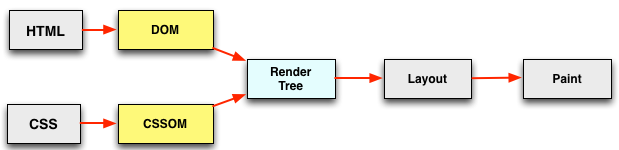
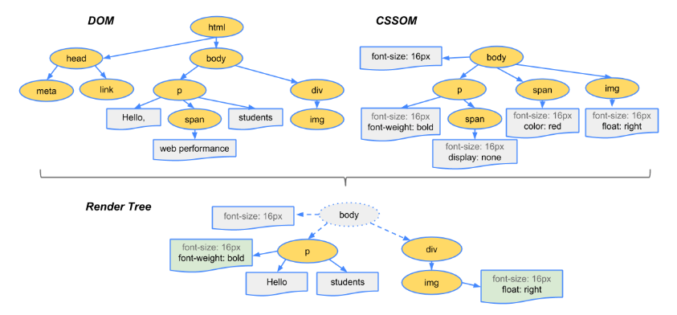
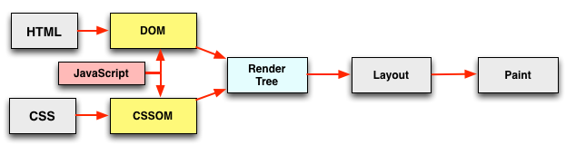
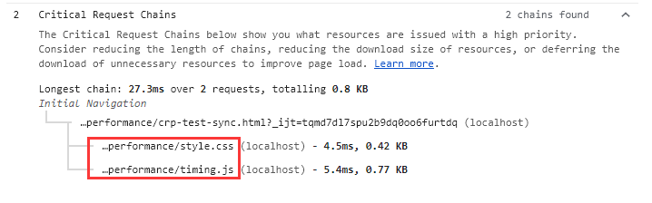
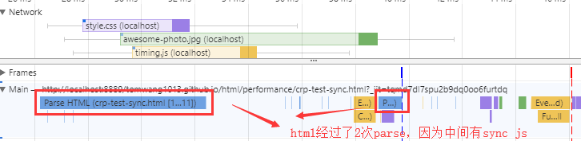
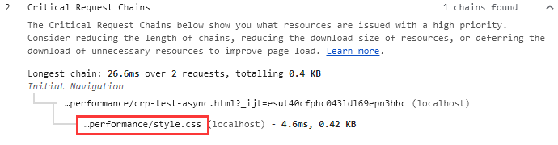
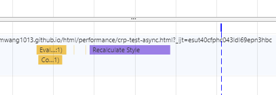
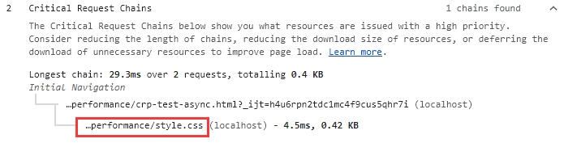
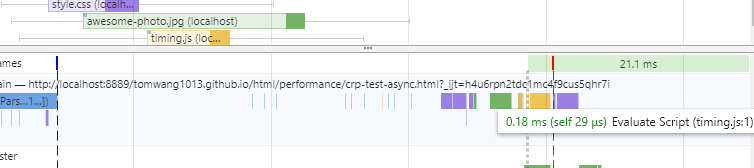

web性能分析通常都是基本理论+反复实践，没有一套统一的标准或方法。以我的经验来看，我们或多或少都知道一些或几点相关理论，但都是很片段很零碎的，不太好总结或关联起来。本文尝试在critical render path(后简称crp)上做一个分析总结。
什么是crp？
crp是和浏览器首屏渲染有关的，指的是浏览器在渲染首屏之前需要经过哪些关键步骤。我们知道，首屏渲染速度是性能的一个重要指标，我们应该让用户在打开页面后尽快看到东西出来。要做到这一点，需要深入分析并优化crp，让这些关键步骤所花时间最小。第一步，我们先看看浏览器是如何渲染页面的
页面渲染流程
这算是一个基本理论，每个浏览器渲染页面都要经过一个基本相同的过程：

- 解析html构建DOM
- 解析css构建CSSOM（和第一步同时进行）
- 将DOM和CSSOM合起来构建渲染树
- 根据渲染树，计算每个元素在窗口中的确切位置和大小
- 执行渲染
我们以一个例子来详细说明这几个步骤，考虑下面一段html：
1 |
|
第一步解析html，生成DOM：

第二步解析css，生成CSSOM：
DOM告诉了我们页面的结构，但是没有样式信息，所以下一步就是解析css，也会生成一个树状结构，这是因为css具有继承特性，子元素或默认继承父元素的一些样式，我们假设页面中的css如下(可以inline或从外部文件导入)：
1 | body { font-size: 16px } |
生成的CSSOM树如下：

灰色的font-size表示这是一个继承属性。这里需要注意的是，CSSOM树中只包含了我们显式设置样式的元素，因为浏览器还有自己的默认样式
第三步把DOM和CSSOM结合在一起，生成渲染树(render tree)：
渲染树包含所有可见的元素及其显式设置的最终样式(computed style)，所以head和p元素下面的span不会出现在渲染树中：

注：图中的渲染树应该少了一个body的植树span元素
第四步计算所有元素在视窗(viewport)中的位置和大小：
在最终渲染之前需要计算每个元素的位置和大小，即它的box model，所有的尺寸css属性都要转为为像素，这一步也叫回流(reflow)
最后一步就是渲染(pixel to screen)了，我们知道了元素的可见性及最终样式、大小、尺寸，剩下的事就是将它们画在屏幕上
这就是整个渲染过程，优化crp就是要尽量减少这5步所花的时间，让内容尽快呈现在用户面前。
css的render blocking特性
从上面我们可以看到，只有html和css都解析完了，我们才能构建渲染树，它们都是渲染阻塞(render blocking)的。html不用说了，没有它我们的页面从何而来，我们来说下css。如果没有样式，使用系统默认的样式，页面是很难看且基本不可用的。如果浏览器解析完DOM就直接渲染，等后面css再解析完了再渲染，就会出现页面的闪动问题：”Flash of Unstyled Content” (FOUC)，所以我们必须尽快构建CSSOM。因为CSSOM与DOM的构建是并行的，所以一般将css放在head里面，让它尽快开始构建，这样能将渲染树的构建尽量提前。
javascript登场
页面当然少不了js，关于js的故事也最多。当页面引入js后，问题变复杂了，因为js太强大了：既能修改DOM有能修改CSSOM，还有人人闻之变色敬而远之的document.write，所以大家都听到一个故事了：浏览器在parse html过程中只要一遇到js，就要停止parse，直接此js加载并运行完成，这就是html block on js。其实这个故事只讲了一半，另一半是js block on css：如果当前有css还没有下载或解析完，js必须等待它们完成后才能执行！
前面说过，DOM和CSSOM是并行独立解析的，现在因为js的加入，它们之间发生了关联：DOM解析因js而阻塞，而js又因CSSOM而阻塞：

这也解释了为什么css在上，js在下(Stylesheets at the top, scripts at the bottom)：js放在body的末尾，这样就不会对DOM和CSSOM的构建进行干扰，让它们并行尽快完成；放在下面还有一个好处就是不通过document.ready事件也能直接引用所有DOM元素。
说说defer和async
前面说的html block on js中的js值的是sync js，js可以加上defer或async属性，大家应该都听说过，这里我们详细比较下这2个属性，首先它们有一个共同点：不会阻塞html的解析，不同点如下：
- defer js的执行在DOM和CSSOM全部构建完之后立即按顺序执行，而async js在加载完后马上执行，但是不保证执行顺序
- DOMContentLoaded(DCL)在defer js执行完后再触发，而async js的执行和DCL触发时机无关。使用async js的话，DCL一般在DOM构建完后马上触发
由此可见，如果不考虑js执行顺序，应该优先使用async js
使用chrome devtool中的Audits查看页面crp
我们分别使用sync js，defer js，async js来测试下网页的渲染过程，特别是crp，页面如下：
1 |
|
-

可以看到js在crp中，且html经过了2次parse，中间被sync js阻塞了：

DCL(蓝线)也在js之后触发
-

js不在crp中，但是DCL依然在js之后触发：

-

js不在crp中，和预想的一样，且DCL也在js执行之前触发：

DCL在html parse完之后马上触发了
总结
想要提高页面加载和渲染速度，让用户尽快看到内容并交互，必须尽量减少crp的总体时间，控制crp中的资源数量
参考：
https://developers.google.com/web/fundamentals/performance/critical-rendering-path/
https://calendar.perfplanet.com/2012/deciphering-the-critical-rendering-path/